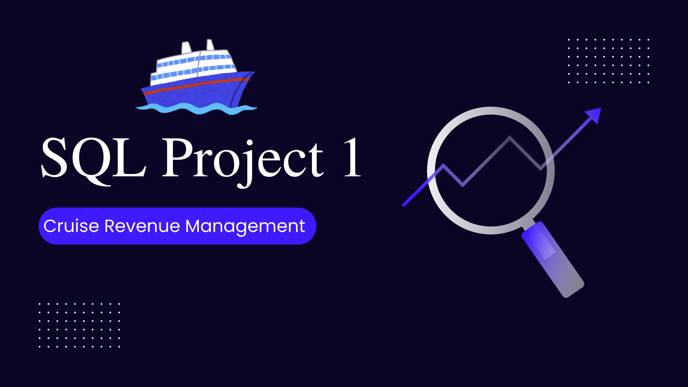

SQL Projects
SQL Portfolio
SQL projects focused on data cleaning, exploratory data analysis, business intelligence, and transforming raw data into actionable insights using Microsoft SQL Server.

Cruise Revenue Management
End-to-end SQL analysis of a cruise booking dataset using Microsoft SQL Server. The project explores booking trends, revenue performance, occupancy rates, customer satisfaction, and business insights through data cleaning, aggregations, CASE statements, date functions, and Common Table Expressions (CTEs).
View Case Study →
Cruise Revenue Management Analysis
End-to-end SQL analysis of a cruise booking dataset using Microsoft SQL Server. The project explores revenue, occupancy, booking trends and customer satisfaction through data cleaning, exploratory analysis and business-focused SQL queries.
View Case Study →